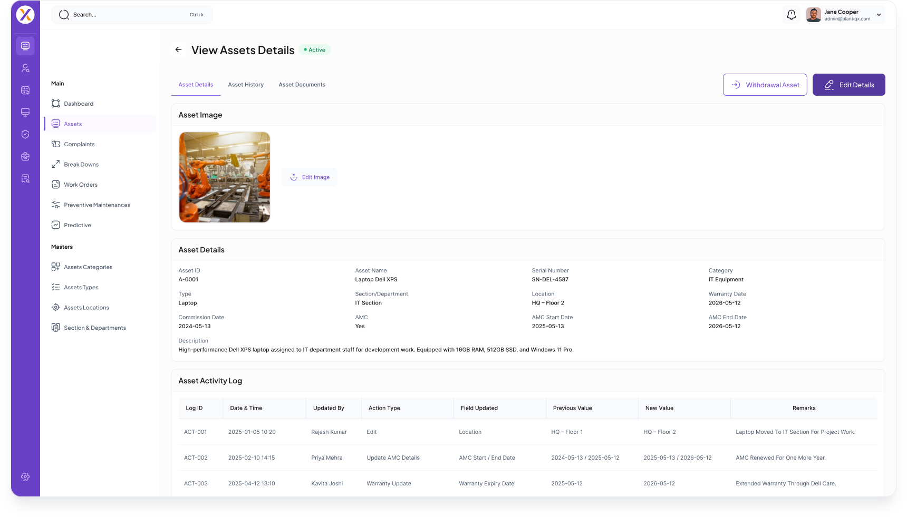

Asset Management
Made Intelligent
Track, monitor, and optimize every asset in your facility with real-time insights and AI-backed predictive capabilities — from installation to end of life.
Request a Demo

Complete Visibility Over Every Asset
PlantIQX Asset Management gives you a unified, real-time view of all your industrial equipment — their health, location, usage, maintenance history, and predicted lifespan. No more spreadsheets, guesswork, or reactive firefighting.
Monitor every asset's status, location, and performance in real time from a central dashboard.
Track assets from procurement through decommissioning with complete audit trails.
Get notified instantly when an asset deviates from expected performance thresholds.
Everything You Need to Manage Assets Smarter
Performance Monitoring
Track OEE, utilization rates, and performance KPIs for every asset with live dashboards and trend charts.
Predictive Maintenance Scheduling
AI models predict when each asset needs servicing — before a failure occurs — reducing emergency repairs.
Asset Tagging & Identification
QR code and RFID-based tagging for instant asset lookup, inspection records, and service history access.
Work Order Management
Create, assign, and track work orders digitally. Technicians get mobile alerts with step-by-step job instructions.
Asset Hierarchy Mapping
Build structured asset trees — from plant to department to equipment — for granular reporting and accountability.
Automated Reporting
Generate compliance, maintenance, and cost reports automatically — saving hours of manual effort every week.
How Industries Use It
Real-world applications of PlantIQX Asset Management across industrial sectors.
Manufacturing Plant Floor
Monitor hundreds of production machines simultaneously. Detect vibration anomalies, track OEE, and auto-schedule preventive maintenance to keep lines running continuously.
Oil & Gas Facility
Track rotating equipment like pumps, compressors, and turbines in real time. Alert engineers instantly when pressure or temperature thresholds are exceeded.
Pharmaceutical Production
Maintain compliance-ready asset logs and calibration records for regulated equipment — audit-ready at any time with full traceability.
Power & Utilities
Manage transmission and distribution assets across multiple sites with centralized visibility, reducing field trips and emergency response costs.
Food & Beverage Processing
Track sanitation schedules, equipment runtime, and cleaning cycles for each production asset to meet food safety standards and avoid contamination risks.
Automotive Assembly
Coordinate multi-shift maintenance windows, track jig and fixture performance, and minimize costly line stoppages with proactive asset health alerts.
Ready to Take Control of Your Assets?
See how PlantIQX Asset Management transforms your facility's operations with a personalized demo.
Schedule a Demo